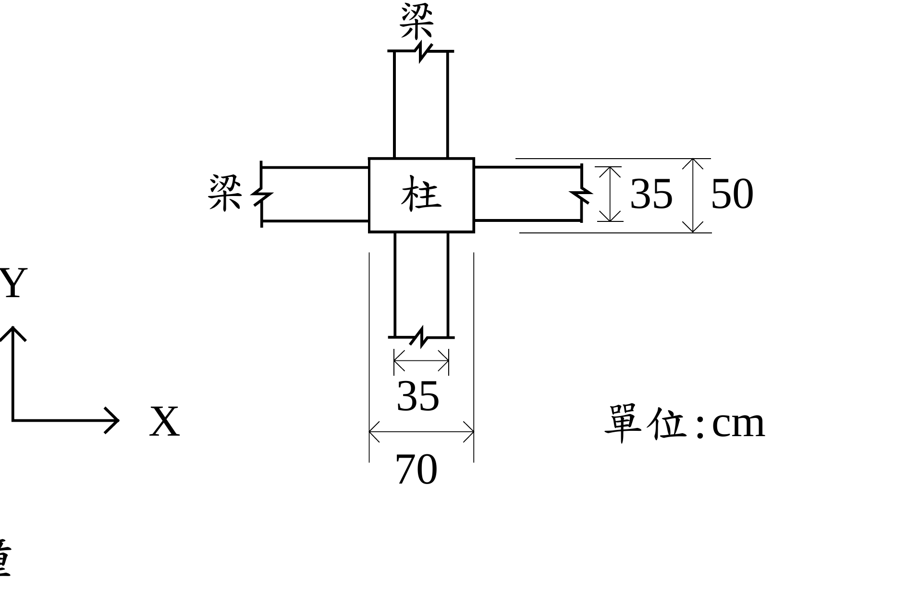
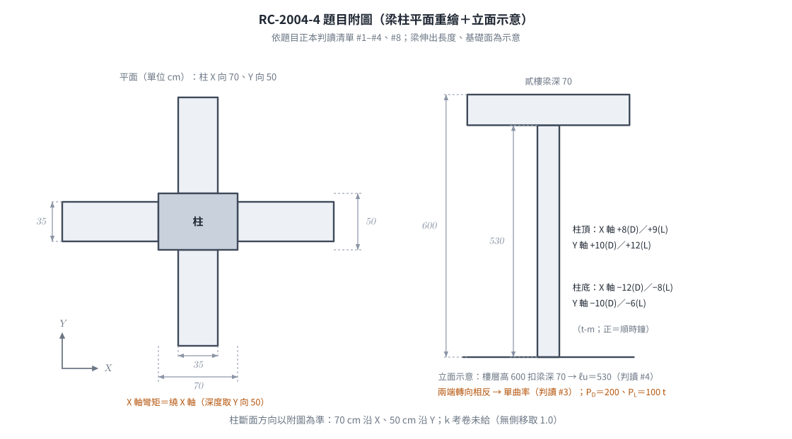
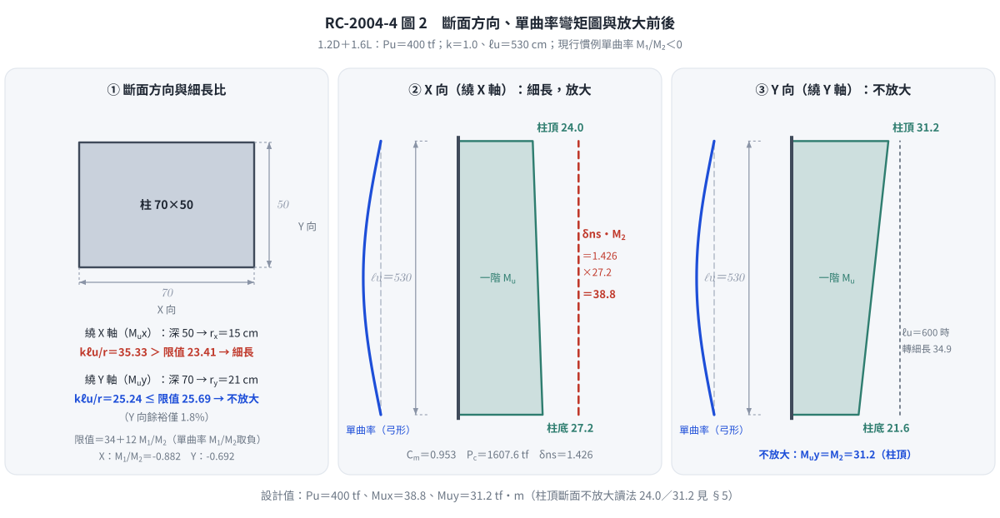

📄 題目正本：考卷原文・附圖・判讀清單（已確認）
RC-2004-4 題目正本
本檔只記錄考卷上寫了什麼、圖上畫了什麼，不含任何解法。解析見同資料夾
RC-2004-4.md。
判讀清單已經確認（凍結）；本檔原則上不再修改（改動須回考卷原圖並記 log）。
| 項目 | 內容 |
|---|---|
| 考卷 | raw/exams/RC-2004_鋼筋混凝土設計與預力.pdf 第 2 頁（背面），第四題 |
| 考年 | 民國 93 年（2004） |
| 配分 | 25 分 |
| 附圖 | RC-2004-4-fig-2.png（梁柱平面示意；2026-11-15 由考卷重新擷取 500 dpi）；既有 RC-2004-4-fig-1.png 為同一圖，右上空白處有滑鼠游標，保留不刪 |
| 判讀狀態 | 已確認（2026-11-15 使用者授權依 Claude 建議確認；轉錄 2026-11-15；PyMuPDF 110 dpi 全頁目視，附圖 400–450 dpi 局部放大；文字以 PDF 文字層核對（公式以影像為準）；尺寸線端點以 PDF 向量座標量測；盲讀後才比對既有解析） |
1. 考卷原文（逐字）
四、建築物壹樓高度 600cm，壹樓中有一根柱尺寸為 50cm×70cm，所連接貳樓梁均為 35cm×70cm。已知條件為:
㈠呆載重時，軸力 $P_D$＝200t，
頂部 X 軸彎矩 $M_{DX,頂}$＝8t-m，Y 軸彎矩 $M_{DY,頂}$＝10t-m，
底部 X 軸彎矩 $M_{DX,底}$＝-12t-m，Y 軸彎矩 $M_{DY,底}$＝-10t-m。㈡活載重時，軸力 $P_L$＝100t，
頂部 X 軸彎矩 $M_{LX,頂}$＝9t-m，Y 軸彎矩 $M_{LY,頂}$＝12t-m，
底部 X 軸彎矩 $M_{LX,底}$＝-8t-m，Y 軸彎矩 $M_{LY,底}$＝-6t-m。若僅考量此兩種載重，試問此柱頂部所對應的設計值 $P_u$、$M_{ux}$ 及 $M_{uy}$ 為何？（25 分）
提示：⑴ $f'_c$＝280 kgf/cm²，$f_y$＝4200 kgf/cm²。⑵ $k\ell_u/r=34-12M_1/M_2$。⑶ $C_m=0.6+0.4M_1/M_2$。⑷ $EI=\dfrac{0.4E_cI_g}{1+\beta_d}$。⑸ $\delta_{ns}=\dfrac{C_m}{1-\dfrac{P_u}{\phi_kP_c}}$。⑹ 彎矩正號代表順時鐘，負號代表逆時鐘
2. 考卷給的公式、附表與參數
- 題文數值：壹樓高度 600 cm；柱 50 cm×70 cm；貳樓梁 35 cm×70 cm；D、L 兩種載重下的軸力與柱頂、柱底 X 軸／Y 軸彎矩（見 §1）。
- 提示公式（照錄，⑵ 考卷寫等號）：$k\ell_u/r=34-12M_1/M_2$；$C_m=0.6+0.4M_1/M_2$；$EI=0.4E_cI_g/(1+\beta_d)$；$\delta_{ns}=C_m/(1-P_u/\phi_kP_c)$；彎矩正號順時鐘、負號逆時鐘。
- 同卷第二題「資料」列有 $E_c=15000\sqrt{f'_c}$、$f_r=2.0\sqrt{f'_c}$ 與鋼筋 D10–D32 資料（不在第四題題內）。
- 沒有給：有效長度因數 $k$、側移或無側移（提示公式為無側移式）、$\phi_k$ 值、載重組合與載重因數、$\beta_d$ 定義、柱配筋、上下樓層資料、梁跨度。
- 卷首注意事項：不必抄題，作答時請將試題題號及答案依照順序寫在試卷上，於本試題上作答者，不予計分。可以使用電子計算器。
3. 附圖

圖面文字照錄：梁、梁、柱、35、50、35、70、Y、X、單位:cm。
4. 判讀清單
「把握」標不確定者優先列；解讀類項目（題目用字的意思）另標「解讀」。標「依 Claude 建議確認」者，為使用者 2026-11-15 授權「要我確認的請依你建議」後定案。
| # | 項目 | 判讀 | 圖上／題文依據 | 把握 |
|---|---|---|---|---|
| 1 | 柱斷面方向 | X 向 70 cm、Y 向 50 cm（題文「50cm×70cm」沒有指明方向，以附圖為準） | PDF 向量座標：柱外框 x 寬 31.4 pt、y 高 22.1 pt，比值 1.42≈70/50；下方「70」尺寸延伸線對齊柱左右邊，右側「50」延伸線對齊柱上下邊 | 確定（影響答案）；依 Claude 建議確認 |
| 2 | X 軸／Y 軸彎矩 | 「X 軸彎矩」＝繞 X 軸的彎矩（$M_{ux}$），彎曲面為 Y–Z 平面、斷面深度取 Y 向 50 cm；「Y 軸彎矩」繞 Y 軸、深度取 X 向 70 cm | 題文「頂部 X 軸彎矩」「設計值 $M_{ux}$ 及 $M_{uy}$」；下標慣例 | 不確定（影響答案）；依 Claude 建議確認 |
| 3 | 單／雙曲率 | 正號＝順時鐘、負號＝逆時鐘；兩方向皆為柱頂正（順時鐘）、柱底負（逆時鐘）→ 兩端彎矩轉向相反 → 單曲率（D、L 兩種載重皆然） | 提示⑹；題給頂、底彎矩正負號。端彎矩轉向相反為單曲率、相同為雙曲率 | 確定（解讀）；依 Claude 建議確認 |
| 4 | 柱淨長 $\ell_u$ | 樓層高 600 cm 扣貳樓梁深 70 cm＝530 cm（壹樓高度視為樓板面至樓板面；柱底基礎面無梁扣減） | 題文「壹樓高度 600cm」「貳樓梁均為 35cm×70cm」 | 不確定（影響答案）；依 Claude 建議確認 |
| 5 | 側移 | 無側移（提示⑵⑶⑸為無側移構架式） | 提示公式 | 確定（解讀） |
| 6 | 有效長度因數 $k$ | 考卷沒有給；無側移取 $k$＝1.0（保守），須明列 | 全題（梁跨度未給，無法用列線圖） | 確定（解讀）；依 Claude 建議確認 |
| 7 | 所求「柱頂部所對應的設計值」 | 柱頂斷面的 $P_u$、$M_{ux}$、$M_{uy}$；若需細長柱放大，依現行規範處理放大後彎矩所在位置 | 題文 | 確定（解讀） |
| 8 | 梁 | 貳樓梁 35 cm 寬 × 70 cm 深，四面各一支，中心線對齊柱中心 | 附圖：梁寬 16 pt≈35；X 向梁中心 y＝456.1 與柱中心 456.6 重合 | 確定 |
| 9 | 載重組合 | 考卷沒有給；依現行規範（題目印出的提示式亦依現行規範換用） | 題文「若僅考量此兩種載重」 | 確定 |
| 10 | 考卷沒有給 | $k$、$\phi_k$、$\beta_d$ 定義、載重因數、柱配筋、上層資料 | 全題 | 確定 |
轉錄：2026-11-15（RC-U3-3 批 2＋U1-3＋U2-3 題目正本推廣）
確認：2026-11-15 使用者授權依 Claude 建議確認（RC-U3-3 批 2＋U1-3＋U2-3 題目正本推廣，關卡一）
考題編號：RC-2004-4
主分類： RC-U1-3 細長柱
副分類： RC-U1-2 RC 柱強度分析與設計
設計法： USD 強度設計法
標籤： 雙軸彎矩 細長柱 彎矩放大法 δns放大係數 無側移構架 載重組合 單曲度 M1M2比值 迴轉半徑
1. 題目（考卷原文見題目正本）
考卷原文、公式／附表、附圖與判讀清單（已確認）見
RC-2004-4-problem.md。本節只列解題時最容易讀錯的地方與本解使用的記號；題意以題目正本為準。

重繪自考卷附圖，依題目正本判讀清單 #1–#4、#8。本圖攔下的讀錯：柱 70 cm 讀成 Y 向；單曲率讀成雙曲率；$\ell_u$ 用層高 600 cm。
常見誤讀
| 項目 | 正確判讀 | 常見誤讀 |
|---|---|---|
| 柱斷面方向 | X 向 70、Y 向 50 cm（以附圖為準） | X 向 50、Y 向 70（本庫舊解） |
| X 軸彎矩 | 繞 X 軸，深度取 Y 向 50 cm（$r$＝0.3×50＝15） | 深度取 70 cm |
| 曲率 | 頂正（順時鐘）、底負（逆時鐘）→ 轉向相反 → 單曲率；現行慣例 $M_1/M_2$ 為負 | 兩端反號即雙曲率（本庫舊解） |
| $\ell_u$ | 600－70＝530 cm | 層高 600 cm（本庫舊解） |
| $k$、載重組合 | 考卷沒有給：無側移取 $k$＝1.0；載重組合依現行規範 1.2D＋1.6L | 1.4D＋1.7L（舊規範，本庫舊解） |
| 提示式 | 考卷印的是舊式（$34-12M_1/M_2$、$C_m=0.6+0.4M_1/M_2$）；現行式 $34+12M_1/M_2\le40$、$C_m=0.6-0.4M_1/M_2$（單曲率 $M_1/M_2$ 為負，兩套數值相同） | 現行慣例的負號代入舊式 |
| 「柱頂部所對應的設計值」 | 細長方向的設計彎矩為全柱的 $M_c=\delta_{ns}M_2$（含柱頂），本解主線取此值；只取柱頂斷面一階彎矩者見 §5 | 一律取柱頂一階彎矩、不放大 |
本解記號： 柱 $b_x$＝70、$b_y$＝50 cm；$\ell_u$＝530 cm；$k$＝1.0（假設）；$P_D$＝200、$P_L$＝100 tf；彎矩見題目正本 §1（正＝順時鐘）。$M_{ux}$＝繞 X 軸（深 50），$M_{uy}$＝繞 Y 軸（深 70）。規範：建築物混凝土結構設計規範（2023 年版，ACI 318-19 世代）5.3、6.2.5、6.6.4。
2. 考題核心精神與出題者意圖
核心觀念： 強度設計載重組合＋無側移細長柱判斷，判斷各方向是否需要 $\delta_{ns}$ 彎矩放大，並求放大後設計值。
測驗重點：
- 依現行規範做 $1.2D + 1.6L$ 組合（軸力與頂、底各方向彎矩）
- 依附圖確定各方向的斷面深度，求 $r$ 與 $k\ell_u/r$（$\ell_u$ 扣梁深）
- 依提示⑹的正負號判斷曲率（轉向相反＝單曲率）→ $M_1/M_2$ 的正負號
- 與 $34+12(M_1/M_2)\le40$ 比較；細長方向求 $\beta_{dns}$、$EI$、$P_c$、$C_m$、$\delta_{ns}$
典型陷阱（3 個）：
- ⚠ 曲率判斷：「正＝順時鐘」是端彎矩轉向；頂順、底逆＝單曲率（不是看數字正負號相反就是雙曲率）
- ⚠ $r$ 的方向：$M_{ux}$（繞 X 軸）用 Y 向深度 50 cm → $r_x$＝15 cm；$M_{uy}$ 用 X 向 70 cm → $r_y$＝21 cm
- ⚠ Y 向貼邊界：$k\ell_u/r_y$＝25.24 vs 限值 25.69，僅差 1.8%
3. 解題戰略地圖與陷阱分析
作戰計畫：
- $U = 1.2D + 1.6L$：求 $P_u$ 與頂、底各方向因數化彎矩
- 判斷曲率（單曲率）→ $M_1/M_2$ 取負
- 計算 $r_x$＝0.3×50、$r_y$＝0.3×70
- 取 $k = 1.0$，$\ell_u = 530$ cm，計算 $k\ell_u/r$
- 與 $34 + 12(M_1/M_2)\le40$ 比較，決定是否放大
- 細長方向：$\beta_{dns}$、$EI$、$P_c$、$C_m$、$\delta_{ns}$、$M_{2,\min}$、$M_c$
3.5 變數層次分析 (Variable Hierarchy Analysis)
最終目標
求柱頂部的設計值 $P_u$（tf）、$M_{ux}$（tf·m）、$M_{uy}$（tf·m），包含細長柱效應。
本題關鍵公式
$$P_u = 1.2P_D + 1.6P_L,\qquad M_u = 1.2M_D + 1.6M_L$$
$$r_x = 0.3\times50,\quad r_y = 0.3\times70$$
$$\text{可忽略細長效應：} \frac{k\ell_u}{r} \le 34 + 12\left(\frac{M_1}{M_2}\right) \le 40\quad(\text{單曲率 } M_1/M_2<0)$$
$$EI=\frac{0.4E_cI_g}{1+\beta_{dns}},\quad P_c=\frac{\pi^2EI}{(k\ell_u)^2},\quad C_m=0.6-0.4\frac{M_1}{M_2},\quad \delta_{ns}=\frac{C_m}{1-P_u/(0.75P_c)}\ge1.0$$
$$M_c=\delta_{ns}\max(M_2,\ M_{2,\min}),\quad M_{2,\min}=P_u(1.5+0.03h)$$
L1：題目直接給定
| 符號 | 數值 |
|---|---|
| 樓層高 | 600 cm |
| 柱 | X 向 70 × Y 向 50 cm（附圖） |
| 梁 | 35 × 70 cm（貳樓） |
| $P_D,P_L$ | 200 tf, 100 tf |
| $f'_c$、$f_y$ | 280、4200 kgf/cm² |
| 各端彎矩 | 見題目正本 §1 |
L2：需知識點推導
| 符號 | 公式／來源 | 卡關? |
|---|---|---|
| $\ell_u$ | $600-70=530$ cm | |
| $P_u$ | $1.2(200)+1.6(100) = 400$ tf | |
| $M_{ux,\text{頂}}$ | $1.2(8)+1.6(9) = 24.0$ tf·m（順） | |
| $M_{ux,\text{底}}$ | $1.2(12)+1.6(8) = 27.2$ tf·m（逆） | |
| $M_{uy,\text{頂}}$ | $1.2(10)+1.6(12) = 31.2$ tf·m（順） | |
| $M_{uy,\text{底}}$ | $1.2(10)+1.6(6) = 21.6$ tf·m（逆） | |
| $r_x$、$r_y$ | $0.3\times50=15$、$0.3\times70=21$ cm | |
| $k\ell_u/r_x$、限值 | $530/15=35.33$；$34+12(-0.882)=23.41$ → 細長 | |
| $k\ell_u/r_y$、限值 | $530/21=25.24$；$34+12(-0.692)=25.69$ → 可忽略 | |
| $\beta_{dns}$ | $1.2P_D/P_u=240/400=0.6$ | |
| $P_{c,x}$ | 1607.6 tf | |
| $C_{m,x}$、$\delta_{ns,x}$ | 0.953、1.426 |
L3：深層知識（不懂就卡住）
| 知識點 | 說明 | 卡關? |
|---|---|---|
| 單曲率 vs 雙曲率 | 端彎矩轉向相反（一順一逆）＝單曲率（弓形），柱中段二階效應最大；轉向相同＝雙曲率（S 形） | |
| 現行符號慣例 | ACI 318-19 世代：單曲率 $M_1/M_2$ 為負、雙曲率為正；式子 $34+12M_1/M_2$、$0.6-0.4M_1/M_2$ | |
| $\beta_{dns}$ | 現行規範：最大因數化持續軸力／同組合最大因數化軸力（舊版以彎矩比定義） | |
| $r$ 方向對應 | 繞 X 軸彎曲時斷面深度是 Y 向尺寸；矩形可取 $r=0.3h$ |
4. 步驟化詳細計算過程
① 因數化設計載重（$U = 1.2D + 1.6L$，現行規範 5.3）
$$P_u = 1.2 \times 200 + 1.6 \times 100 = 240 + 160 = \boxed{400\ \text{tf}}$$
各端彎矩（大小；轉向依提示⑹）：
| 位置 | $M_{ux}$（繞 X 軸） | $M_{uy}$（繞 Y 軸） |
|---|---|---|
| 頂部 | $1.2(8)+1.6(9) = \mathbf{24.0}$ tf·m（順） | $1.2(10)+1.6(12) = \mathbf{31.2}$ tf·m（順） |
| 底部 | $1.2(12)+1.6(8) = \mathbf{27.2}$ tf·m（逆） | $1.2(10)+1.6(6) = \mathbf{21.6}$ tf·m（逆） |
頂部順時鐘、底部逆時鐘 → 兩端轉向相反 → 單曲率（兩方向、D 與 L 皆然）
② $M_2$ 與 $M_1/M_2$（現行慣例：單曲率為負）
| 方向 | $M_2$ | $M_1$ | $M_1/M_2$ |
|---|---|---|---|
| X 軸（$M_{ux}$） | 27.2 tf·m（底） | 24.0 tf·m（頂） | $-24.0/27.2 = -0.882$ |
| Y 軸（$M_{uy}$） | 31.2 tf·m（頂） | 21.6 tf·m（底） | $-21.6/31.2 = -0.692$ |
③ 細長比驗核（$k = 1.0$，$\ell_u = 530$ cm，$r=0.3h$）
X 軸彎曲（深度 50 cm）：
$$r_x = 0.3\times50 = 15\ \text{cm},\qquad \frac{k\ell_u}{r_x} = \frac{530}{15} = 35.33$$
$$34 + 12(-0.882) = 23.41 \;<\; 35.33 \quad\Rightarrow\quad \text{X 向為細長柱，需放大}$$
Y 軸彎曲（深度 70 cm）：
$$r_y = 0.3\times70 = 21\ \text{cm},\qquad \frac{k\ell_u}{r_y} = \frac{530}{21} = 25.24$$
$$34 + 12(-0.692) = 25.69 \;\ge\; 25.24 \quad\Rightarrow\quad \text{Y 向可忽略細長效應（餘裕僅 1.8\%）}$$
④ X 向彎矩放大
$$\beta_{dns} = \frac{1.2P_D}{P_u} = \frac{240}{400} = 0.6$$
$$E_c = 15000\sqrt{280} = 250{,}998\ \text{kgf/cm}^2,\qquad I_{g} = \frac{70\times50^3}{12} = 729{,}167\ \text{cm}^4$$
$$EI = \frac{0.4E_cI_g}{1+\beta_{dns}} = \frac{0.4\times250{,}998\times729{,}167}{1.6} = 4.576\times10^{10}\ \text{kgf·cm}^2$$
$$P_c = \frac{\pi^2EI}{(k\ell_u)^2} = \frac{9.8696\times4.576\times10^{10}}{530^2} = 1{,}607{,}600\ \text{kgf} = 1607.6\ \text{tf}$$
$$C_m = 0.6 - 0.4\times(-0.882) = 0.953$$
$$\delta_{ns} = \frac{0.953}{1 - 400/(0.75\times1607.6)} = \frac{0.953}{1-0.332} = 1.426 \ge 1.0$$
$$M_{2,\min} = P_u(1.5+0.03h) = 400\times(1.5+0.03\times50)/100 = 12.0\ \text{tf·m} < 27.2$$
$$M_{c,x} = \delta_{ns}M_2 = 1.426\times27.2 = \boxed{38.8\ \text{tf·m}}$$

圖 2 三格依序回答「哪個方向細長」「彎矩怎麼分布」「放大後多少」：X 向（繞 X 軸、深 50）細長需放大，Y 向（深 70）餘裕僅 1.8% 不放大。攔的是柱斷面方向弄反（把 70 cm 當繞 X 軸的深度）、把兩端轉向相反的單曲率誤當雙曲率（$M_1/M_2$ 取正會使 $C_m$ 與限值都算錯），以及放大前後的彎矩混用。
⑤ 結論：設計值
| 項目 | 數值 | 說明 |
|---|---|---|
| $P_u$ | 400 tf | $1.2D+1.6L$ |
| $M_{ux}$ | 38.8 tf·m | X 向細長，$\delta_{ns}M_2$＝1.426×27.2（全柱設計彎矩，含柱頂） |
| $M_{uy}$ | 31.2 tf·m | Y 向不放大，柱頂即 $M_2$ 所在 |
$$\boxed{P_u = 400\ \text{tf},\qquad M_{ux} = 38.8\ \text{tf·m},\qquad M_{uy} = 31.2\ \text{tf·m}}$$
（以此三值做雙軸 P-M-M 檢核；Y 向貼近細長限值，見 §5。）
5. 關鍵爭議點與進階探討
① 「柱頂部所對應的設計值」的兩種讀法
| 讀法 | $P_u$ | $M_{ux}$ | $M_{uy}$ |
|---|---|---|---|
| 主線：細長方向用全柱設計彎矩 $\delta_{ns}M_2$（現行規範 6.6.4.5，放大後彎矩用於整支柱設計） | 400 | 38.8 | 31.2 |
| 對照：只取柱頂斷面一階彎矩、不放大 | 400 | 24.0 | 31.2 |
無側移構架的二階彎矩發生在柱中段，規範以 $\delta_{ns}M_2$ 作為整支柱的設計彎矩；題目若只要柱頂斷面的組合值，答案為 24.0／31.2。
② $\ell_u$＝600 cm 對照（不扣梁深）
| 方向 | $k\ell_u/r$ | 限值 | 判斷 | $P_c$ | $\delta_{ns}$ | $M_c$ |
|---|---|---|---|---|---|---|
| X | 40.0 | 23.41 | 細長 | 1254.4 tf | 1.658 | 45.1 tf·m |
| Y | 28.57 | 25.69 | 變為細長 | 2458.6 tf | 1.120 | 34.9 tf·m |
③ Y 向細長比貼近限值（敏感度）
$k\ell_u/r_y$＝25.24 vs 25.69，差 1.8%。以下任一情況都會使 Y 向轉為細長：$\ell_u$＝600（上表）、$k$ 稍大於 1.02、或以精確 $r=h/\sqrt{12}$＝20.21 cm（$k\ell_u/r$＝26.23 > 25.69，此時 $\delta_{ns}$＝1.056、$M_{uy}$＝32.9 tf·m）。規範容許矩形取 $r=0.3h$，本解主線照用；實務設計遇此邊界宜保守放大。
④ 舊解（1.4D＋1.7L、斷面方向與曲率讀錯）對照
舊解讀成 X 向 50、Y 向 70、雙曲率、$\ell_u$＝600、$U=1.4D+1.7L$，得 $P_u$＝450、$M_{ux}$＝26.5、$M_{uy}$＝34.4 tf·m（兩向皆不放大）。斷面方向、曲率、$\ell_u$ 三處讀法與題目正本不符，載重組合為舊規範，已全部更正。
⑤ 單曲率使細長效應最大的物理意義
單曲率（弓形）柱在 $P$ 作用下中段側向變位與一階彎矩同向疊加，二階效應最大；$M_1/M_2\to-1$（等端彎矩單曲率）時限值降到 22、$C_m\to1.0$。本題 X 向 $M_1/M_2$＝－0.882，接近等彎矩，故 $C_m$＝0.953、放大 43%。
修正日期：2026-11-15（§1 改為指向題目正本，插入重繪附圖 figs/RC-2004-4-fig-1-problem.svg；舊 §1 重述改寫為常見誤讀與本解記號；本行非答案勘誤）
修正日期：2026-11-15（改依現行台灣規範（建築物混凝土結構設計規範 2023／耐震規範 111）；依題目正本更正讀法：柱 X 向 70／Y 向 50、單曲率、$\ell_u$＝530 cm；載重組合 1.4D＋1.7L → 1.2D＋1.6L、$\beta_{dns}$ 改軸力比、細長限值與 $C_m$ 改現行式；$P_u$ 450 → 400 tf、$M_{ux}$ 26.5 → 38.8 tf·m（X 向細長放大 $\delta_{ns}$＝1.426）、$M_{uy}$ 34.4 → 31.2 tf·m；§5 列柱頂斷面不放大（24.0／31.2）與 $\ell_u$＝600 對照；驗證：.work/u33b2c/check_errata_U3_3_B2.py 重算 MISMATCHES: 0）
圖解補繪：2026-11-15（向量圖 figs/RC-2004-4-fig-2-moments.svg，腳本 figs/gen_RC-2004-4.py，可重跑；數值由常數現算並於檔尾 assert 對 §4；DIAG-RC-U3-3-B2）